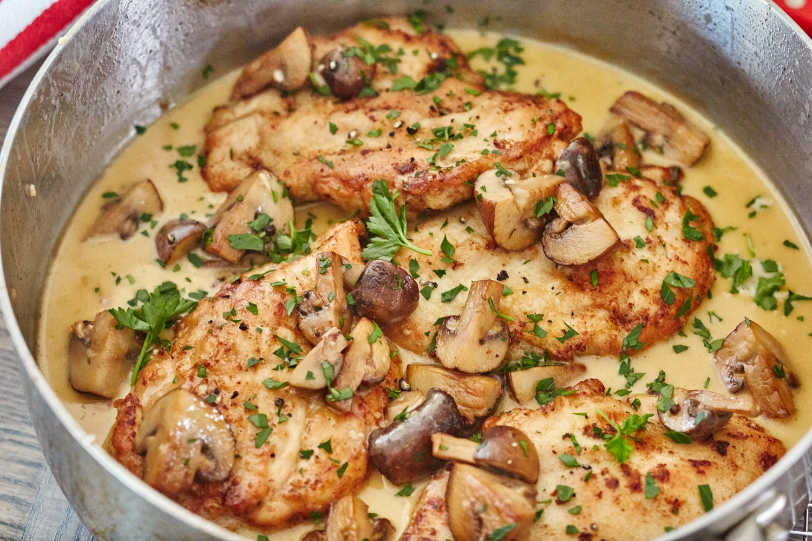

Go to main page
Chicken Marsala Over White Rice

Description
A simple-to-make but delicious chicken Marsala recipe. Serve over hot cooked rice.
Ingredients
- 1 cup uncooked white rice
- 2 cups water
- 1 cup all-purpose flour
- salt to taste
- ground black pepper to taste
- 1 pinch dried oregano to taste
- 1 pound skinless, boneless chicken cutlets, pounded to 1/4-inch thickness
- 1 tablespoon olive oil
- 2 tablespoons butter, divided
- 1 clove garlic, minced
- 1 cup sliced fresh mushrooms
- salt and ground black pepper to taste
- 1/2 cup chicken stock
Steps
-
Bring the rice and water to a boil in a saucepan over high heat. Reduce heat to medium-low, cover, and simmer until the rice is tender, and the liquid has been absorbed, 20 to 25 minutes. Set rice aside.
-
In a large bowl, whisk the flour with salt, black pepper, and oregano. Gently press the chicken breasts into the flour mixture to coat, and shake off the excess flour.
-
Heat the olive oil and 1 tablespoon butter in a large skillet over medium-high heat. Arrange the chicken in the skillet and cook until the chicken is no longer pink inside and golden brown outside, 5 to 8 minutes per side. Drain the cooked chicken on a paper towel-lined plate.
-
Melt the remaining 1 tablespoon butter in the same skillet over medium heat while scraping up any brown bits with a spoon. Stir in the garlic; cook and stir until fragrant. Add the mushrooms, and cook and stir until they are tender and have released their liquid, about 10 minutes. Season with salt and black pepper, then stir in the Marsala wine and chicken stock.
-
Transfer the chicken back to the skillet, and spoon sauce over chicken pieces. Increase heat to medium-high, and bring to a boil. Cover, reduce heat to medium-low, and simmer until the the sauce is thickened, about 5 minutes more. Serve the chicken and sauce over the cooked rice.